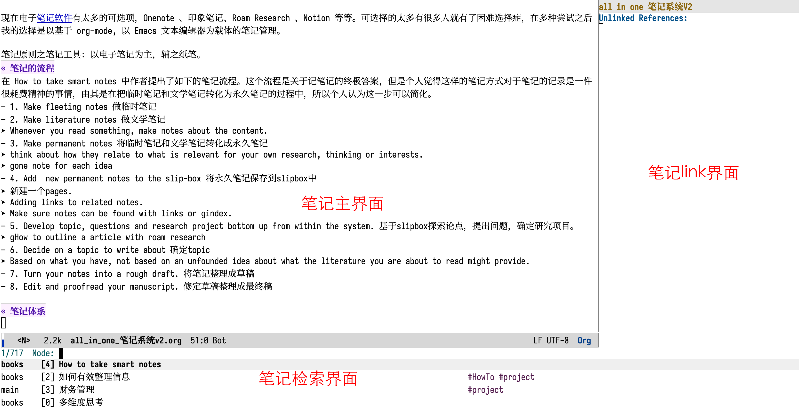
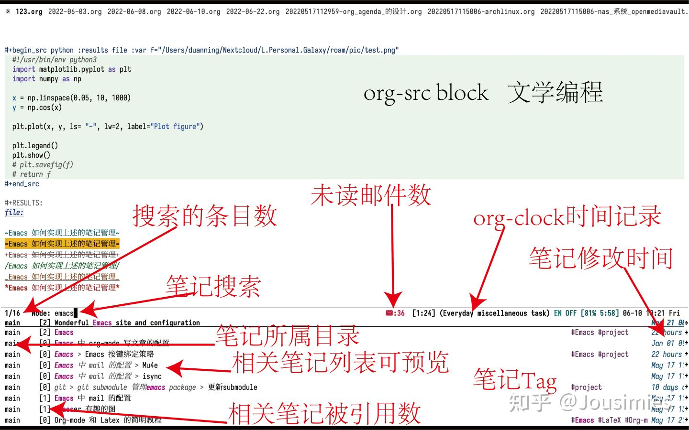

All-in-one 笔记系统
Table of Contents
之前在知乎上看到一个问题是：有没有一个All in One的笔记系统？我个人对此的实践是使用 Emacs。
什么是 Emacs？Emacs 官网对此的定义是：
An extensible, customizable, free/libre text editor — and more.
一个可扩展、自定义、自由的文本编辑器。
下面阐述我基于 Emacs 进行笔记管理的工作流程，以及什么是 all-in-one。
在上面的提问中，提问者列出了自己关于 all-in-one 笔记的系统的几点要求。笔记记的是什么内容呢，初步列举如下：
1. 笔记的基本
此处的笔记以文字内容为主，图片、视频为辅。若笔记内容主要是图片或者视频，此文对于笔记的管理方法不太适合你。
一则笔记的基本
1.1. 文本+格式
笔记肯定第一位的就是需要记录大量的文本内容。那么文本只能是汉字、英文、字母吗？当然不是，文本也有格式，如对文本进行加粗、斜体、引用、列表等等。文本+格式只要是个笔记软件应该都能提供（window 上的 txt 记事本不行，过于简陋）。
但是文本与格式分离，这不是哪个软件都能做好的。如 word 就很难做到样式和内容的分离，以我的经验，它可以做到但是很难，你需要对word 有充分的了解。Latex 就很容易做到文本与样式的分离，但是它难在非所见即所得。（有什么软件你需要深度使用，但是可以对其不需要了解的吗？没有什么是纯傻瓜式的。）
1.2. 图表
我认为表格只是文本内容呈现的另一种方式，笔记系统中不需要使用过于复杂的表格。
这里要提到 onenote 笔记软件，这个软件我很多次都想利用起来，但是最终都没能。现在想来，它就像一个画板，做笔记像画画，内容超出屏幕范围时，很难对内容有个全局的了解。相对应的是幕布类的大纲式的软件（有了解没用过，不评价）。Onenote软件作的笔记如果想要内容很规整，一个方法就是嵌套使用表格（可以很漂亮，但是不推荐）。
图是笔记系统中一个很重要的组成部分。笔记系统中插入图我想有两种方式，一种是如word ，印象笔记的方式。一种是类似org-mode, markdown这种方式，以链接的方式插入到笔记当中。我选择第二种。
图直接插入到笔记当中的方式，往往是专有格式的软件。这类笔记系统对于软件本体依赖过高，不利于笔记在不同系统中的转移。图直接插入到笔记当中，会导致单个笔记的体积很大，而且很难在不同的笔记中进行复用。相应的使用图片链接的方式就没有上述的问题。
1.3. 公式
公式我只推荐使用 latex ，以文本的方式进行管理。如 Word 上使用 mathtype 进行公式的输入非常差，难以编排，交叉引用。
如果你认为latex 输入公式很慢，不直观，是大概率你没有使用合适的方法。你需要的是快速输入的方法以及公式预览。Latex公式的效果看看这个demo。
{kind=link}
1.4. 文献管理
文献管理软件有很多，如zotero，endnote，mendeley，jabref等等。笔记系统中我推荐使用zotero，其他都不做推荐。我更喜欢的方式是直接管理bibtex文件，zotero只是我用来收集bib的工具。
此外，还应关注的是文献文件的格式，大部份应该都是pdf 文件。
如果是caj等格式，那么推荐你使用tampermonkey在知网上下载pdf 格式的，而不是caj格式的（我讨厌caj）。
如果你看的是出版物，网上有很多提供的epub格式。
1.5. 音频和视频
这里不过多写，我没这个需求。对此没什么实践。
2. 笔记的原则
2.1. 笔记本身
不分来源，不分重要性，只要是自己关心、想记录下来的内容，都可以一点一滴地写在笔记本上。《如何有效整理信息》
记笔记很难的一点在于归类，以什么主题进行记录。如何有效整理信息一书的作者提出的不分来源，不分重要性，只要是自己关心的都可以记录下来。
这样也可以解决一个问题，记笔记有什么用？笔记记录的作用不一定在当下，有可能在以后，当你需要的时候有一个系统可以供你查询。关于笔记的主题或者分类我的关点就是不分类，或者只是给一个大类而不具体的进行区分，当相关的笔记积累了足够多的内容再进行整理与归类。不依赖分类，取而代之的是建立以搜索为基础的笔记管理方法。
笔记的原则关于笔记本身：记什么？记你关心的内容！怎么分类？不分类！
2.2. 笔记工具
传统的笔记工具以纸笔为载体，各种手账、剪纸等，以纸笔为载体是纸媒时代的最有效的进行笔记管理的方式，如何有效整理信息这本书的作者就提出了一元化的笔记方法，作者本人也积累了大量的笔记本。个人很配服他的这种毅力，平常人很难一以贯之的坚持进行笔记的记录。
但是我个人不怎么喜欢这种基于纸笔的笔记管理方式，当前是网络时代，我们有太多的信息是基于网站等获取的，我们身处于电子时代，我认为笔记的最终去处是电子化。出门不一定会携带纸笔，但是一定会带上手机，部份情况下不适合使用电子设备进行笔记的记录也可以暂时的使用纸笔进行记录，事后再进行电子化。
现在电子笔记软件有太多的可选项，Onenote 、印象笔记、Roam Research 、Notion 等等。可选择的太多有很多人就有了困难选择症，在多种尝试之后我的选择是以基于 org-mode, 以 Emacs 文本编辑器为载体的笔记管理。
笔记原则之笔记工具：以电子笔记为主，辅之纸笔。
3. 笔记的流程
在 How to take smart notes 中作者提出了如下的笔记流程。这个流程是关于记笔记的终极答案，但是个人觉得这样的笔记方式对于笔记的记录是一件很耗费精神的事情，由其是在把临时笔记和文学笔记转化为永久笔记的过程中，所以个人认为这一步可以简化。
- 1. Make fleeting notes 做临时笔记
- 2. Make literature notes 做文学笔记
- Whenever you read something, make notes about the content.
- 3. Make permanent notes 将临时笔记和文学笔记转化成永久笔记
- think about how they relate to what is relevant for your own research, thinking or interests.
- gone note for each idea
- 4. Add new permanent notes to the slip-box 将永久笔记保存到slipbox中
- 新建一个pages.
- Adding links to related notes.
- Make sure notes can be found with links or gindex.
- 5. Develop topic, questions and research project bottom up from within the system. 基于slipbox探索论点，提出问题，确定研究项目。
- gHow to outline a article with roam research
- 6. Decide on a topic to write about 确定topic
- Based on what you have, not based on an unfounded idea about what the literature you are about to read might provide.
- 7. Turn your notes into a rough draft. 将笔记整理成草稿
- 8. Edit and proofread your manuscript. 修定草稿整理成最终稿
4. 笔记体系

5. 笔记软件选取原则
本地管理 这一点排除了一堆以云端存储笔记的软件，如Onenote 、Notion 、印象笔记等。不使用 Onenote 是因为它的同步实在是一个问题，其他的软件不是很信任。比知这个：https://www.zhihu.com/question/521826071/answer/2579062261
本地管理不意味着笔记软件不能进行同步管理，可以使用Onedrive 、icloud 或者自建同步软件进行笔记同步。也可以使用 git 进行版本管理。
纯文本格式 纯文本意味着脱离软件本体同样可以使用其他的软件打开，它的本质只是文本，不像Word 、Onenote 等属于富文本文档。富文本文档当脱离软件之后其他的软件是不能进行编辑的。有太多的笔记软件不支持导出或者不支持特定格式的文本导出，有些软件刚开始支持导出，后来又不支持导出，使用这类软件风险太高。(3 封私信) 有道云笔记等笔记软件不支持笔记批量导出，算是垄断吗？ - 知乎 、(3 封私信) 使用goodnotes导出文件太大不能导出怎样解决？ - 知乎 太多的问题自己查询。
使用基于 markdown 或者 org-mode 的纯文本就没有以上的问题，它们都可以使用 pandoc 导出为其他的格式的文本。Org 在导出这一块比 markdown 要强上很多。
非商业软件 商业软件的支持由于商业的本性，当不能给团队带来收入，它的可持续性是很大的问题。
当前比较火的 Obsidian 就是商业软件，你的笔记不能记录任何与工作相关的内容，否则是需要购买授权的。能免费用不代表它不是商业软件。
6. Emacs 如何实现上述的笔记管理
Emacs 中进行笔记写作依赖的是 org-mode，关于 org-mode 的介绍可以见其官方网站，网上也有很人写了介绍。

Figure 2: 笔记界面
6.1. 笔记界面
Emacs 上想要实现笔记还需要依赖其他的包，好在这些都是开源的，你不需要担心其突然就不能用的问题。
文本记录需要用到 org-mode + org-roam，org-roam 是链式笔记，对此可以知乎上搜zettelkasten。有人对此有不同的意见。我的意见是，你可以用也可以不用。好处是可以保持笔记的原子化，便于复用。
org-mode 自带表格功能，简单的矩阵式表格使用自带的即可。如果是要实现复杂的表格，那么在org-mode 中插入 Latex 表格即可。
图表的功能，以文件链接的方式插入。好处是org-mode 中可以直接切换是否在当前文档中显示图片。
公式那么直接使用 latex 语法就可以啦，预览可以使用自带的功能，我推荐使用 math-preveiw这个包，输入的话开启cdlatex的功能，那么输入各种公式符号都很方便。
其他关于使用 org-roam 进行笔记管理的博客1：